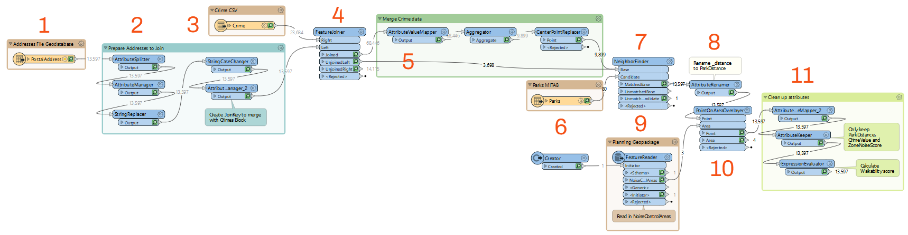
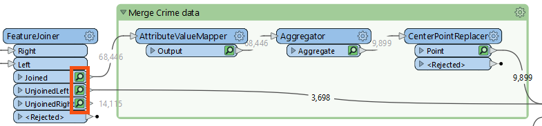
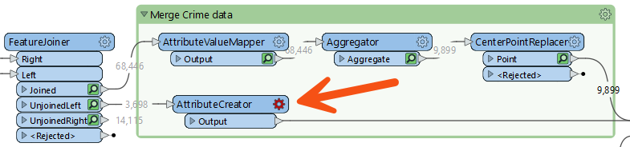
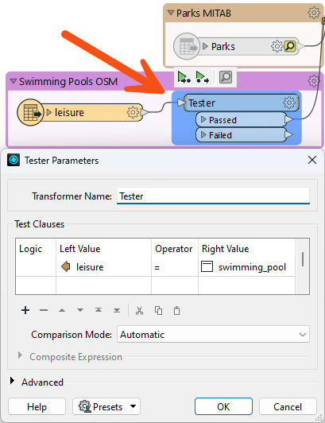
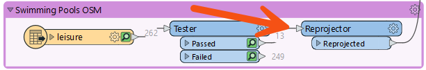

After completing this lesson, you’ll be able to:
Your manager just assigned you to take over a project from your colleague, and they passed their workspace on to you. This project is to calculate the "walkability" of each address in the city of Vancouver. Walkability measures how easy it is to access local facilities on foot. The workspace will measure the distance to the nearest park, the amount of crime in an area, and other similar metrics.
The workspace currently assesses crime, parks, and noise-control areas, but it doesn't give an overall measure of walkability.
Let's build on their workspace and use our debugging skills to address any problems we encounter.
Start FME Workbench (2023.1 or later) and open the starting workspace. Then, run the workspace to cache the data.
First, let's figure out what this workspace does:

The ExpressionEvaluator transformer creates a measure of walkability that combines the values from crime, park proximity, and noise zones.
Inspect the parameters of the ExpressionEvaluator transformer to the end of the workspace.
It creates a new attribute called Walkability that is:
@Value(ParkDistance) + @Value(CrimeValue) - @Value(NoiseZoneScore)
With this expression, the smaller the result, the more walkable an address.
Let's assess whether the result of the translation is correct.
Firstly check the log window for errors and warnings. There are no errors, but there are several warnings, which is not a good sign:

The number of warnings showed in the Translation Log may be different in your workspace. These numbers can vary based on the Logging Parameters set in FME Options.
Click on the warnings button to filter out the warnings. The warnings say:
Null, missing, or empty string operand was found in expression '@Value(ParkDistance) + @Value(CrimeValue) - @Value(NoiseZoneScore)'. Result is set to null
Inspect the output cache on the ExpressionEvaluator (you can click the link next to the warning in the log to focus on it), and some addresses do indeed have a Walkability value of <null>.
So we know there is a problem, let's try and figure out where the problem is and why it occurs.
There were no errors, but the output of the workspace is still incorrect. Make sure you always inspect your workspace results to ensure it is configured properly.
We can tell the warning comes from the ExpressionEvaluator, but that doesn't necessarily mean that is where the problem lies.
Because we know a null, missing, or empty string is the problem, we can inspect the ExpressionEvaluator cache to look for the source of the problem. A practical wa to do this is to right-click on ParkDistance, CrimeValue, and NoiseZoneScore in the Table View window and sort them by ascending numeric order. That will put any null or missing values at the top of the table.
Doing this will reveal that CrimeValue has <missing> values. So, the calculation in the ExpressionEvaluator fails because the middle value is <missing>. Let's find out why some of these features have missing CrimeValue values.
Inspect the FeatureJoiner caches, because that's where we first get our Crime data:

There are no missing values from the FeatureJoiner, so let's move along the translation. Check the cache for the AttributeValueMapper. This transformer sets values, so perhaps missing values are coming out of there?
If you inspect the AttributeValueMapper cache, you'll see no missing values for the CrimeValue or the crime Type attribute. There are also no missing values in the Aggregator and CenterPointReplacer caches.
What about the 3,698 features that do not have a crime, what CrimeValue do they get? Inspect the UnjoinedLeft output from the FeatureJoiner, and you will see that they do not have the CrimeValue attribute. That's why the ExpressionEvaluator says that there are missing values. These features do not have a CrimeValue because they don't enter the AttributeValueMapper, which assigns a value to CrimeValue.
You can confirm this issue by inspecting the NeighborFinder's MatchedBase cache, the cache where the addresses with crime and those without crime come together. You can sort CrimeValue and see that it has missing values here.
If those features do not have a CrimeValue attribute, then we should give them one. To do so, add an AttributeCreator transformer to the workspace between the FeatureJoiner's UnjoinedLeft output port and the NeighborFinder:Base input port:

Open its parameters and create an attribute called CrimeValue with a value of zero (0).

Run the workspace, which will run from the AttributeCreator to the ExpressionEvaluator. You should now find fewer warnings and that the Walkability attribute contains no <null> values. Take note of the max value: 956.
The city has decided that parks are not a great candidate for walkability scores because there is usually a park nearby. They decided to evaluate how easy it is to walk to a swimming pool.
We can reuse the same workflow for swimming pools that we used for parks, with just a few minor updates.
First, let's add a new reader with the following parameters:
|
Reader Format |
OpenStreetMap (OSM) XML |
|
Reader Dataset |
https://s3.amazonaws.com/FMEData/FMEData/Data/OpenStreetMap/leisure.osm or C:\FMEData\Data\OpenStreetMap\leisure.osm |
When prompted, select only the leisure feature type:

Then move the new leisure reader near the Parks reader and connect it to the NeighborFinder:Candidate input port. Then right-click on the Parks reader and select Disable.
If you inspect the leisure data, you'll notice various leisure facilities types, with the type recorded in the leisure attribute.
So, add a Tester transformer between the leisure reader and the NeighborFinder. Set up the parameters to test for leisure = swimming_pool:

Now update AttributeRenamer to be PoolDistance instead of ParkDistance. The renaming of this attribute will cause the ExpressionEvaluator to turn red.
To fix the ExpressionEvaluator, open the parameters and change @Value(ParkDistance) to @Value(PoolDistance) to take account of the new PoolDistance attribute:
@Value(PoolDistance) + @Value(CrimeValue) - @Value(NoiseZoneScore)
You'll also have to do the same thing for the AttributeKeeper transformer.
Re-run the workspace. Check the log for warnings and errors, and then inspect the ExpressionEvaluator cache.
Notice that the walkability scores are exceedingly large all of a sudden due to the PoolDistance. The new max value is 5,477,800. Something is wrong, but what?
PoolDistance is the source of the problem. There is no related log message to give a clue, and the Feature Count numbers look correct.
Let's inspect the data. Click on the leisure reader and while holding the shift key, click on the NeighborFinder. This step will open all the selected caches in Visual Preview.
If you have Toggle Automatic Inspect on Selection disabled, you'll have to right-click on either object and select Inspect Cached Features after selecting them both.
Right-click in the Graphics view, go to Background Map, and ensure Background map off is selected. Visual Preview shows two specks of data, a long distance apart. This result is typical of a mismatch of coordinate systems.
We turn the background map off, because otherwise Visual Preview automatically reprojects data with mismatched coordinate systems. Turning the background map off lets us see these are not using the same coordinate system.
Click on some features and select the Feature Information button. In this window, you will see that the primary data has a coordinate system of UTM83-10, while the leisure data from OSM has a coordinate system of LL84.
This disparity is why the "nearest" pool to each address is such a high distance.
The obvious solution is to reproject the pools to the correct coordinate system. So, add a Reprojector transformer to reproject the leisure data before it gets to the NeighborFinder:

Inspect its parameters and set it up to reproject from LL84 to UTM83-10.
Re-run the appropriate parts of the workspace. Check the log window and inspect the ExpressionEvaluator cache.
Each address now has a walkability score account for pools instead of parks, with a lower number being better and a higher number worse. The new (correct) maximum is 4,308.
Congratulations on debugging this workspace.